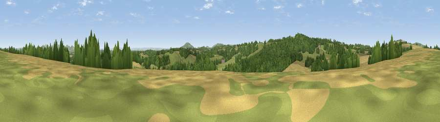

Viewpoint near Kempley
#23336 in England · top 58% of its area beats it · near KempleyWhere it is
The exact computed spot (SO 65225 30025). Click the marker for map links.
The view, rendered

A 360° render of this exact spot computed from the terrain model, tree cover and land cover — summer colours, afternoon light, calibrated against photographs of famous viewpoints. Real trees, hedges and buildings will differ in detail.
The panorama
Grey silhouette: terrain skyline in each direction (720 bearings, Earth curvature and refraction included). Dashed green: skyline with trees (+15 m) and buildings (+8 m) as obstacles. Blue strip: how far the ground is visible on each bearing.
Where the view opens
Wedge length = distance to the farthest visible ground on that bearing (vegetation-aware). Rings at 10, 25 and 50 km.
What fills the view
37% grassland · 33% woodland · 29% cropland ·
Angular shares of the visible panorama (visual magnitude), not map area. Landscape diversity 0.49 (0–1 Shannon).
Key numbers
More beautiful places nearby
The staircase of upgrades: each row has a higher view potential than everything closer. Driving times are estimates from straight-line distance, calibrated against real road routing — check an actual route before setting out.
| Place | Direction | Drive | Score |
|---|---|---|---|
| Viewpoint near Upton Bishop | SSE · 2 km | ~5 min | 54.2 |
| Perrystone Hill | WSW · 2 km | ~5 min | 71.6 |
| Viewpoint near Crow Hill | SW · 2 km | ~5 min | 73.6 |
| Viewpoint near Much Marcle | NW · 4 km | ~9 min | 75.4 |
| Viewpoint near Woolhope | NNW · 5 km | ~10 min | 80.7 |
| Viewpoint near Putley | NNW · 8 km | ~16 min | 80.9 |
| Viewpoint near Tarrington | NNW · 9 km | ~18 min | 81.4 |
| Seagar Hill | NNW · 10 km | ~19 min | 82.1 |
51.96760, -2.50758 · source: screening · position refined by local search. Computed location — check access rights before visiting.